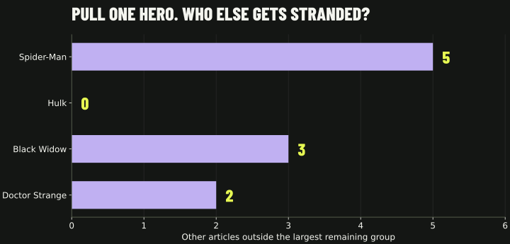
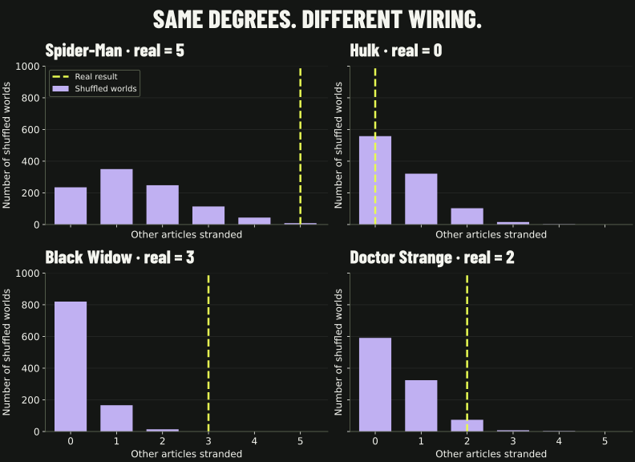

A MARVEL NETWORK STRESS TEST
PULL
ONE HERO.
Take Spider-Man out.
Five other articles lose their only route to the main group.
Take Hulk out. Nobody else gets stranded.
The 30-second findings ↗
SPIDER-MAN GOES. THEN WHAT?
OTHER ARTICLES
LOSE THEIR WAY.
1 ARTICLE REMOVED
5 STRANDED · 271 STILL TOGETHER
01 / MAKE THE CUT
WHO ELSE
GETS STRANDED?
Choose one hero to remove. Everyone else stays. An article is stranded if it can no longer reach the largest remaining group.
REAL LINKS · EVERYONE IS HERE
ONE CONNECTED START.
Use a hero’s switch to make the cut.
NOW CHANGE THE WIRING.

A dot is a Wikipedia article; a line means a link in either direction. We start with the 277 articles that are connected, excluding the 26 already outside that group. Each choice starts fresh and removes just one article. Map positions stay fixed when the links change.
02 / THE TWIST
BIG DOESN’T ALWAYS
MEAN IRREPLACEABLE.
65 CONNECTIONS · REMOVE
HULK
other articles get stranded.
The remaining network can route around him.
25 CONNECTIONS · REMOVE
BLACK WIDOW
other articles get stranded.
Blue Eagle, Rockman and the Witness lose their way to the main group.
Black Widow has fewer than half Hulk’s connections, yet removing her separates three articles. Rockman and the Witness stay linked to each other, but not to the main group.
Counting links misses the backup routes. A hub can have many connections without being anyone’s only way across. That made us ask: is this just what their link counts produce?
03 / COMPARED TO WHAT?
SAME CAST.
SAME COUNTS.
DIFFERENT
DAMAGE.
We rewired the links 1,000 times. Every character kept their original number of connections. Every world started connected.
REMOVE SPIDER-MAN IN EVERY WORLD
Only 9 of the 1,000 shuffled worlds stranded five or more. Having 106 connections alone usually did not reproduce Spider-Man’s five stranded neighbors.
The specific wiring matters. This comparison does not establish why Wikipedia’s editors created those links.
Try the same hero with different wiring ↑THE 30-SECOND FINDINGS
LOOK FOR THE PEOPLE
WITH NO OTHER WAY OUT.
- 01
One removal. Five stranded.
Remove Spider-Man and five other articles lose their route to the main group. 271 stay together.
- 02
A bigger hub can be easier to replace.
Hulk’s removal strands nobody. Black Widow’s strands three, despite her much smaller link count.
- 03
The counts don’t tell the whole story.
Spider-Man’s five becomes 1.4 on average when we shuffle who connects to whom while keeping every degree.
Our surprise: the network mostly holds together. The damage is concentrated in small branches that have no backup route.
Make a different cutBEHIND THE STORY
THE EVIDENCE.
WHEN YOU WANT IT.
The full comparison, choices, limitations, and reproducible work.
What did we ask, and what do these words mean?
Question: does an article’s link count tell us how much the network fragments when that article disappears? We measured every single-node removal in the connected core, then selected four cases for the story and compared them with a null model.
Source: the course’s frozen snapshot, dated 26 August 2026. Its 303 articles have 1,784 directed links. Ignoring direction and merging reciprocal links gives 1,434 unique pairs. We take the largest component: 277 articles and 1,421 pairs. The nine-article island and 17 isolates are excluded because they were already disconnected.
“Connection” means a distinct neighbor in this undirected graph. “Stranded” means a remaining article outside the largest connected component after one named article and all its links are removed. It may still be connected to other stranded articles. The removed article itself is never counted as stranded.
These are simulated article removals, not live Wikipedia edits, fictional deaths, friendships, or changes in readership. Directions are ignored for the whole comparison. A path here need not be a route you could follow by clicking outward links.
Show all four results and the 1,000-world comparison
| Removed | Degree | Real | Shuffle mean | Middle 95% | At least as many |
|---|---|---|---|---|---|
| Spider-Man | 106 | 5 | 1.409 | 0–4 | 9 / 1,000 |
| Hulk | 65 | 0 | 0.583 | 0–2 | 1,000 / 1,000 |
| Black Widow | 25 | 3 | 0.194 | 0–1 | 0 / 1,000 |
| Doctor Strange | 57 | 2 | 0.508 | 0–2 | 85 / 1,000 |

{kind=link}
Spider-Man strands Enigma, Ethan Edwards, Helix, Phil Grayfield, and Thunderclap. Black Widow strands Blue Eagle, Rockman, and the Witness. Doctor Strange strands Captain Ultra and Moonglow. Hulk strands nobody. The complete scan of all 277 removals includes the cases we did not select for this story.
For an upper-tail comparison, the Monte Carlo estimate is (1 + draws at least as large) / (1 + number of draws): about 0.0100 for Spider-Man, 1.0000 for Hulk, 0.0010 for Black Widow, and 0.0859 for Doctor Strange. Zero matching shuffles does not mean zero probability.
How fair is the shuffle, and what did we check?
Each independent run starts from the real graph and performs 28,420 successful double-edge swaps (20 times the edge count). A swap exchanges two pairs of endpoints. We reject self-links and repeated edges. Every article keeps its exact degree; the roster and total edge count stay fixed.
We use NetworkX 3.6.1’s double_edge_swap. That function does not preserve connectedness. To match our connected starting population, we reject any disconnected final draw and begin a new run with a new seed. We accepted 1,000 worlds and rejected 33. This is a null conditioned on a connected result.
Seeds begin at 2026090900 and advance once per attempt. The map shows the first four accepted worlds, in recorded order. They are illustrations; all 1,000 accepted worlds contribute to the statistics.
Checks verify every degree, edge count, simple-graph constraint, and starting connectedness. A separate browser traversal recomputes and verifies all real and displayed example outcomes against NetworkX, including the exact stranded names.
A longer-run check uses 200 additional worlds with 71,050 swaps each (50 times the edge count). Means were 1.370 for Spider-Man, 0.550 for Hulk, 0.160 for Black Widow and 0.530 for Doctor Strange. This supports the broad comparison, but finite swap chains and this diagnostic do not prove uniform sampling.
What can’t we conclude?
This is an exploratory analysis. Spider-Man is the highest-degree article. Hulk provides a large-hub contrast; Black Widow was chosen after inspecting removals because her small degree and larger damage were striking. Doctor Strange provides another hub with stranded neighbors. The four tail estimates are unadjusted and should not be presented as four prespecified confirmatory tests.
The null preserves degrees and starting connectedness. It does not preserve communities, clustering, narrative relationships, or editing practices. The comparison says degrees alone usually do not recreate the observed damage for Spider-Man and Black Widow under this null. It does not identify a cause.
The frozen roster is small and category-bounded. Missing articles, later edits, and link direction may change the picture. The experiment removes one article at a time and counts fragmentation, so “no one stranded” does not mean that distances or other network properties are unaffected.
Reproduce it, and see how AI was used
This post answers Week 2’s “Go nuts” brief, exercise 2.11. An AI coding assistant helped explore removal outcomes, implement the simulations, create the website and write the presentation. Reproduction scripts, saved draws and explicit checks make the numerical claims inspectable.
- Analysis script and figure script.
- Graph, exact results, protocol, input hashes and four example worlds ↓
- All 1,000 null draws ↓ · 200 longer-run draws ↓
- Reproduction instructions and original course data ↗
Design reference: Web-Crawler by Capes & Edges showed how a clear action and feedback can teach a network idea. This post uses a different experiment: article removal with a degree-preserving null model.